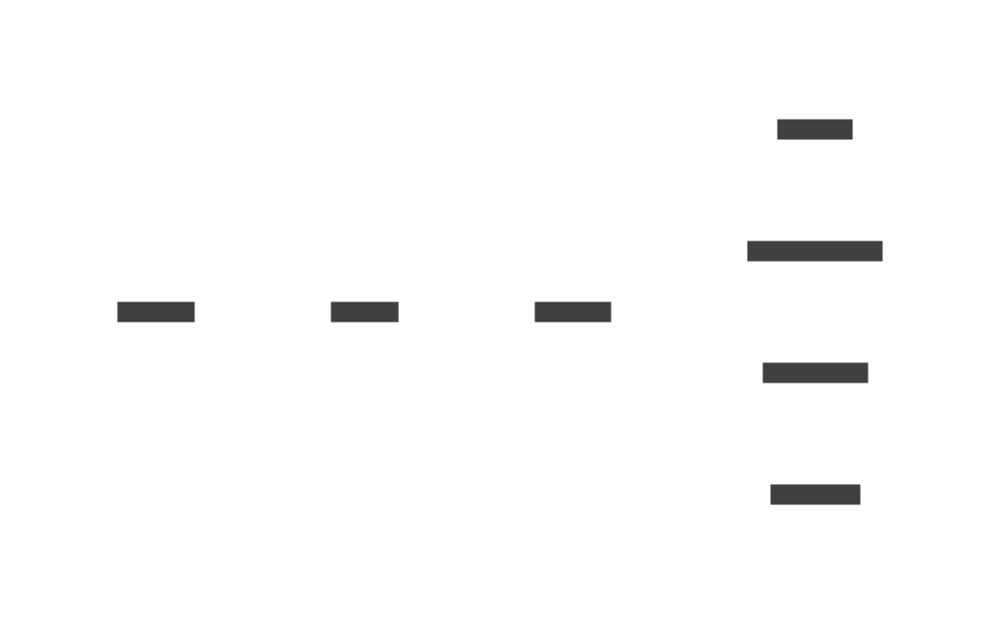

🧩 Comprendre la stack
Cette page présente brièvement l'architecture générale avant de détailler chaque composant.
Le diagramme ci-dessous est généré en SVG avec D2 :

Rôle des composants
- Godot 🎮 : le dossier
godot/renferme les scènes et scripts du mini-jeu. La scènescenes/Main.tscncommunique avec l'API via des nœudsHTTPRequest. - FastAPI ⚡ : le backend Python vit dans
backend/app. Le modulemain.pyexpose notamment la route/txtet enregistre les échanges dansdata/game.dbgrâce à SQLAlchemy. - Ollama 🦙 : construit via
Dockerfile.ollama, ce service crée le modèlegodà partir duModelfilepuis télécharge au besoin le modèle indiqué parOLLAMA_TEXT_MODELgrâce au scriptentrypoint_ollama.sh. - Stable Diffusion 🎨 : le service
stablediffusiongère la génération d'images et conserve les fichiers dans les volumessd_modelsetsd_outputs. - Docker Compose 🐳 : le fichier
docker-compose.ymlorchestre tous les conteneurs et leMakefilefournit les raccourcismake upetmake down. - MkDocs 📚 : la documentation statique est générée depuis
docs/à l'aide du fichiermkdocs.yml.
Pages détaillées
Chaque page de la documentation renvoie vers le site officiel et le manuel de référence pour en apprendre davantage.
Exemple d'appel API
import requests
BASE_URL = "http://localhost:8000"
resp = requests.post(
f"{BASE_URL}/txt",
json={"prompt": "look around", "stream": False},
)
print(resp.json())